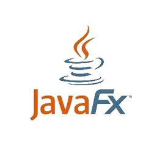

About me
My name is Enzo Pace, a student in Computer Information Systems (SLAM). Passionate about software development and new technologies, I'm developing skills in programming, IT project management, and teamwork.
href="../doc/CV_Enzo_Pace2024_fr.pdf" class="btn-cv" download="CV_Enzo_Pace2024.pdf" id="cv-download" data-i18n="home.download_cv" > Download my Resume
-
2023 - 2025BTS SIO SLAMClick for more information.
-
2024 - PresentEurodislogClick for more information.
-
2023 - 2024RE/MAX FranceClick for more information.
-
2021 - 2023STI2D BaccalaureateClick for more information.
target="_blank"
href="https://www.freepik.com/free-vector/infographic-template-with-yearly-info_1252895.htm"
>inspired by
Languages
Python
JavaScript
HTML
CSS
Java

VBA
C#
PHP

JavaFX
TypeScript
Tools
VS Code
IntelliJ IDEA

WAMP
GitHub

Notion

VB6

XML
SQL

PostMan
Docker
Git
Figma
Visual Studio
Frameworks and libraries
React
Django